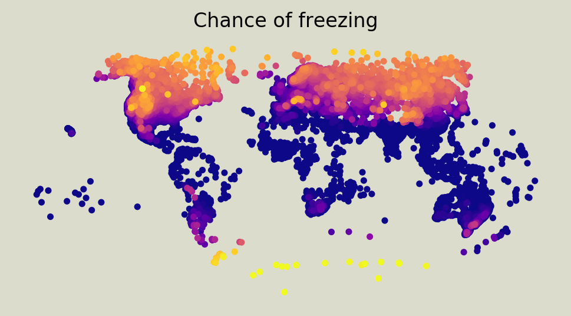
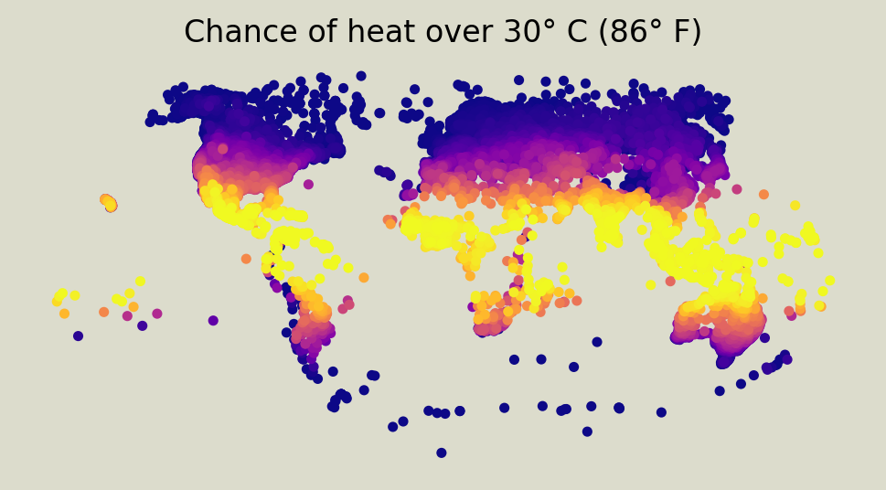
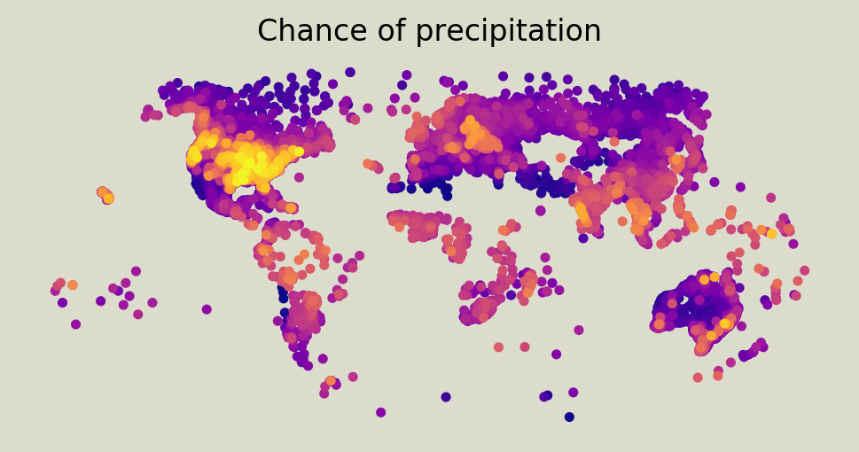
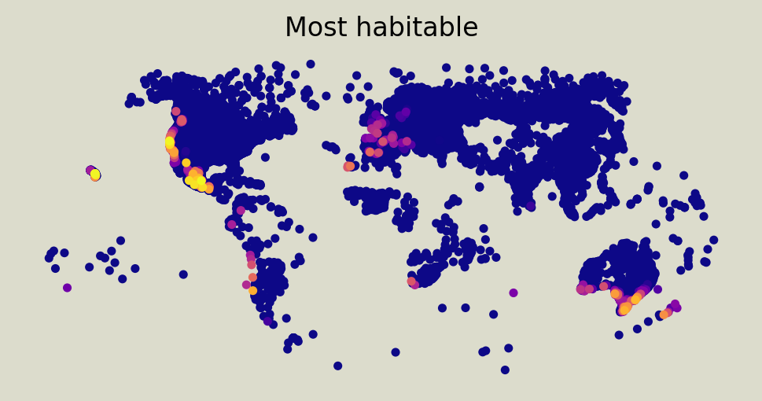
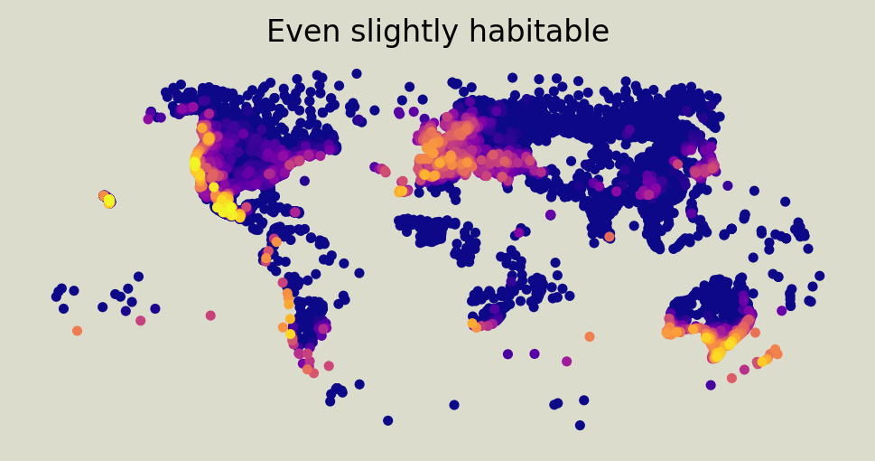

The weather outside is frightening
Wednesday December 30, 2020
Based on ten years of daily GHCN data, it is too cold, too hot, and too wet out there. Best chances for livable weather: parts of the Mexican plateau, California, and maybe Hawaii.
   
Temperature
Lots of land is up north where it gets cold, and everything around the equator gets too hot. Is there a Goldilocks region in between that's "just right" year-round? No. Your best hope is Stockholm syndrome: "I love the seasons!"
To get a moderate temperature all year, you have to rely on oceans, or mountainous elevations, or both. Thanks a lot, solar system.
Precipitation
Even with over 15 thousand stations and ten years of GHCN data, there's spotty coverage for Africa, South America, and Asia. It also looks like the US precipitation data may be systematically different from Canadian and Mexican data. Thanks a lot, humans.
Precipitation: Can't live with it, can't have nice plants without it. Thanks a lot, water cycle. Let's say once every six to nine days is acceptable to avoid deserts.
Habitable areas

Mexico! With ocean on two sides and a high plateau to cut the temperature and humidity, Mexico ought to be where everybody lives. Zacatecas seems particularly good.
California has some okay spots, like San Diego and Monterey. Look out for forest fires.
Hawaii isn't out of bounds, but even the lows are high, so if you aren't at the beach it might not be ideal. Avoid the volcanoes.
Then there are survivable places, including lots of the west coast of the Americas, New Zealand, and the southern coast of Australia. The tip of South Africa and large parts of Europe could be okay. I think that's roughly Japan and Korea seeming not quite deadly.
Methods
This slapdash analysis gathers some data and visualizes it with a Python notebook, which has all the details and a few more fun maps.
The chances of cold, heat, and precipitation are fractions of days with low temperature under 0° C (32° F), high temperature over 30° C (86° F), and precipitation over one millimeter, respectively. The precipitation score may have issues. The scales on these maps go all the way from 0% to 100%, using the plasma color scale. Legends are ugly.
A location's score is the sum of the cold score, hot score, and distance of the precipitation score from the range 1/6 to 1/9. It's not quite a rate any more, just a badness score. The "Most habitable" map colors scores less than 1/4, and the "Even slightly habitable" map colors scores less than 3/5. Do you really want to live somewhere with a score over 60%?